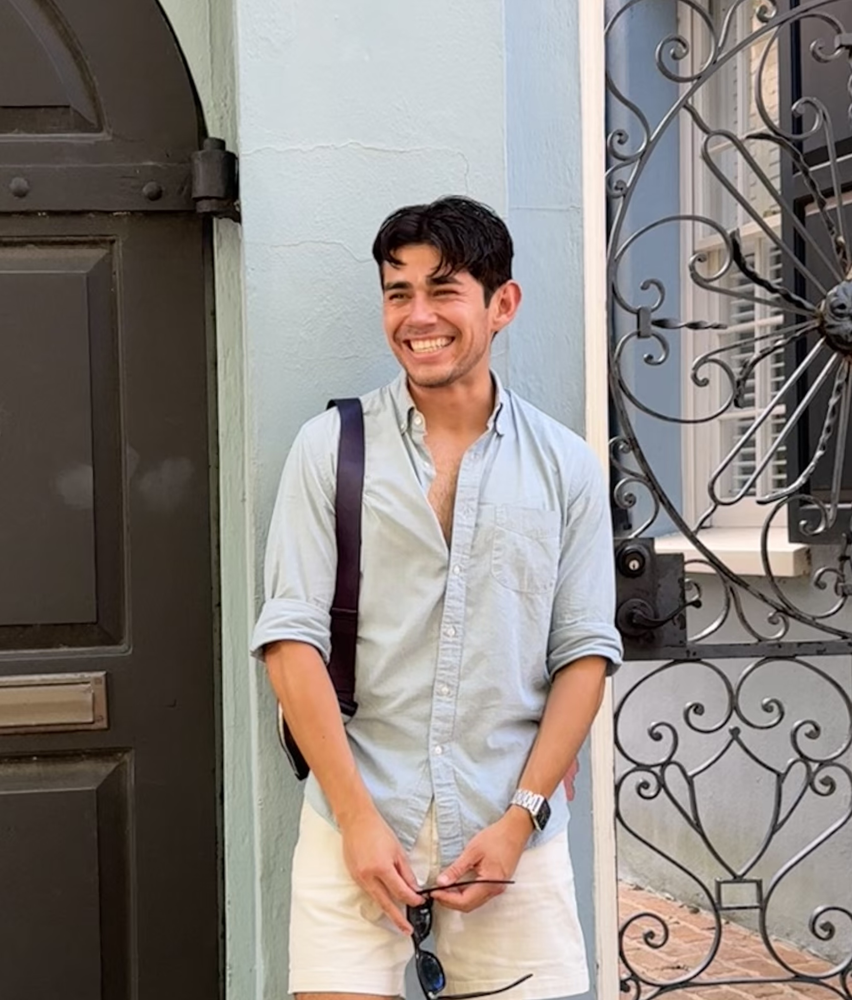

hi, if you're here i'm guessing you are probably looking for some more info about me (not to be presumptive, but you kind of are on cesarruiz.com)
i am allergic to professional credential dropping and resume bullet gloating so if you're looking for that, the closest thing you'll find is on the linkedin button below
i grew up in a small town in northern california next to a lake, and now live by another one in oakland. i've been a one-time (for now???) political organizer, a former (hopefully forever) tech policy person whose job was to fix what the company kept breaking (election misinfo, pandemic conspiracies, teen mental health) while leadership told congress it wasn't really their fault, and a perennially disappointed cal football fan (which is its own form of character building). i walk a lot, write even more, and most sundays can be found carrying home a bundle of trader joe's flowers that i'll proceed to badly arrange in my kitchen
if you're EXTRA confused because you're looking for (or are) the nfl football player, have your people call my people